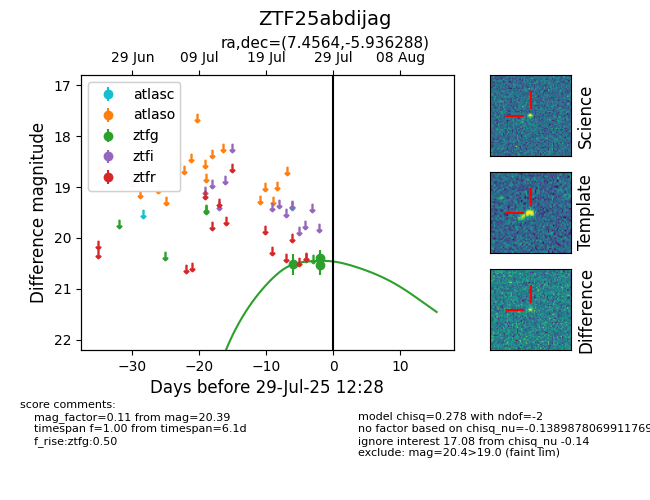

Target ZTF25abdijag at 2025-07-29 12:28, see:
FINK: fink-portal.org/ZTF25abdijag
Lasair: lasair-ztf.lsst.ac.uk/objects/ZTF25abdijag
ALeRCE: alerce.online/object/ZTF25abdijag
alt names
ZTF25abdijag (ztf,fink)
coordinates:
equatorial (ra, dec) = (7.4564,-5.93629)
galactic (l, b) = (108.3289,-68.19314)
photometry
last ztfg=20.39
3 ztfg detections
